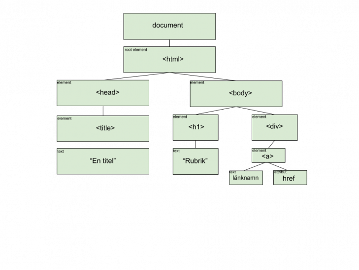

Begrepp och Github Uppgift
GITHUBSFLOW
Github är en tjänst för att hosta utveckling projecter.
Det funkar med en eller flera personer tillsamans och de
kan få det sista uppdetering på själva projekten.
Hur funkar det ,
man behöver fixa ett konto på det först.
Sen man behöver fixa repositery och i den ska fixas en main project som vissar
själva projekten,
och personerna som ska jobb på de, måste de klona ner först mainen hos dem,
sen fixa branch på eget data o jobba sin del eller uppdetera eller utveckla det.
sen måste de skriva commit vad gjorde de o sen pusha det eller
ifall det är många måste göras pullrequest till project ledaren
som kan merga till main sen ifall den är godkänd .
det är som är positive att ingen risk att föstöra andras jobb för alla gör sina.
Och som jag sa Man kan få sista uppdetering genem göra pull kommer sista version i mainen hos dig.
här är example Det är digital meny fixad av 4 personer , de har pared sina del med hjälp av github
FLEXBOX
Flexbox är ett modernare sätt att skåpa layout på websidor.
Det är enkelt modern som ge bra resultat.
Flexbox löser problemmer till example kolummer som är på samma höjd och centrering av elements.
Flexbox det är ett flexibelt sätt att hantera boxar så bra med deras position och storlek.
när man kör på olika enheter som ipad ,mobiler eller dator så kommer
flexbox att ändra layouten så att
passa aktuell skärmslayouten.
så man skriver
.flex-container {
display: flex;
flex-wrap: nowrap;
background-color: red;
}
.flex-container > div {
background-color: #f1f1f1;
width: 100px;
margin: 10px;
text-align: center;
line-height: 75px;
font-size: 30px;
}

DOM(Document Object Model)
Det är en modell för hemsidas struktur som gör att man kan koppla det med programmingsspråk t. example
Javascript.
Med Javascript .
Med Javascript man kan hämta en element oc fixa funktioner eller ändra innhalet
eller
styla och det händer detta genom deklerara variebles och fixa funktioner och koppla dem tillsammans .
Med DOM man kan se själva koderna som träd (när man gör kod granskning).
Med DOM du kan ändra färgen på background-coloriställed CSS eller lägga till eller bort av innhalet .

Finkod
Det betyder att man måste skriva tydligt koder ,
för det ska vara lätt att läsa det till andra utvecklare. ibland man behöver uppdetera nåt efter några år
eller månader,
eller nån annan ska jobba på det som vi har gjort med simsällskåp kod granskning.(lätt och följa kodern och
förstår dem)
Eller ibland jätte stor project behöver dela uppgiften till små delar .
hur ska vara finkod man kan skriva tydligt variebel eller funktioner
inte så förkortningar , eller med
comments man förklarar i dem .
Ramverk
Det är som tilllägg tjänst som kodbibliotek , som nån har skrivit methoder o koder i det.
och till oss vi passar på att använda de färdiga koderna för spara massa tid till oss.
tyvärr man kan inte ändra nåt kod i dem. Det har vi olika Ramverk till ex Bootstrap och react.
Bootstrap
Bootstrap det är ett CSS ramverk som ger dig chans att bygga snabb
hemsida på enkel sätt.
Ok det är bara man kopiera o klistra linker som finns på Bootstrap.com .
.NET
Ramverket består av (klass)bibliotek med mycket kod.
All denna kod är uppdelad i olika moduler som kan användas beroende på vad vi vill ska utföras.
Detta gör det hela väldigt flexibelt och lättanväntFör att kunna köra ett program som skapats för .NET
så krävs Microsoft .NET Framework.